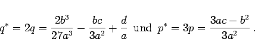
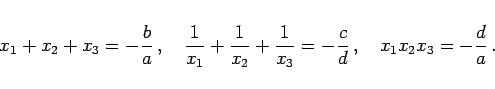

Inhalt Index DeskTop Bronstein

 Arithmetik Algebraische und transzendente Gleichungen Gleichungen 1. bis 4. Grades Gleichungen 3. Grades (kubische Gleichungen)
Arithmetik Algebraische und transzendente Gleichungen Gleichungen 1. bis 4. Grades Gleichungen 3. Grades (kubische Gleichungen)


mit
|  | (1.155c) |
| D = q2 + p3 | (1.156) |
ergibt sich:
|  | (1.157) |
Hinweis: Zur Lösung der Gleichung 3. Grades werden in den nächsten drei Abschnitten drei Methoden betrachtet. Eine vierte Lösungsmethode beruht auf Näherungsverfahren.